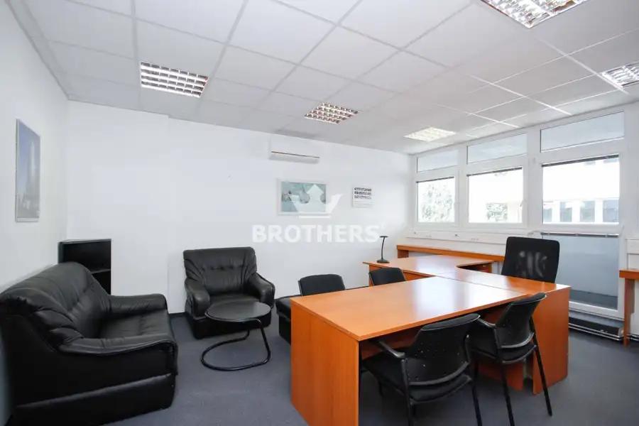
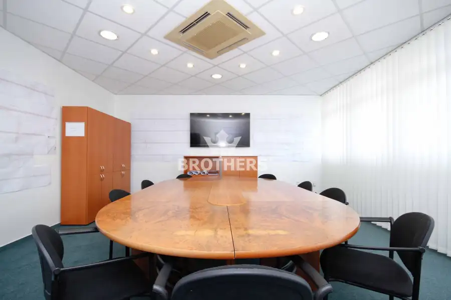
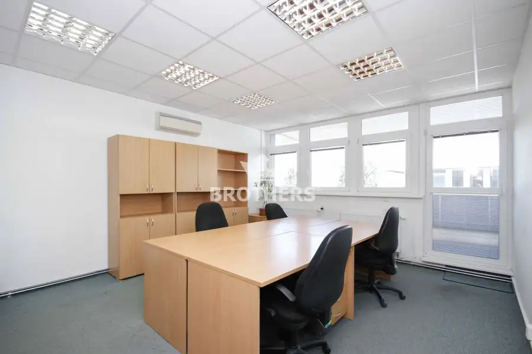
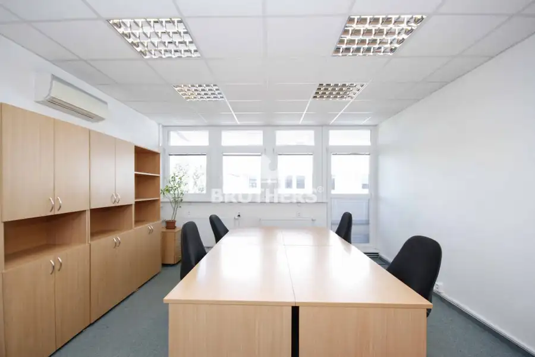
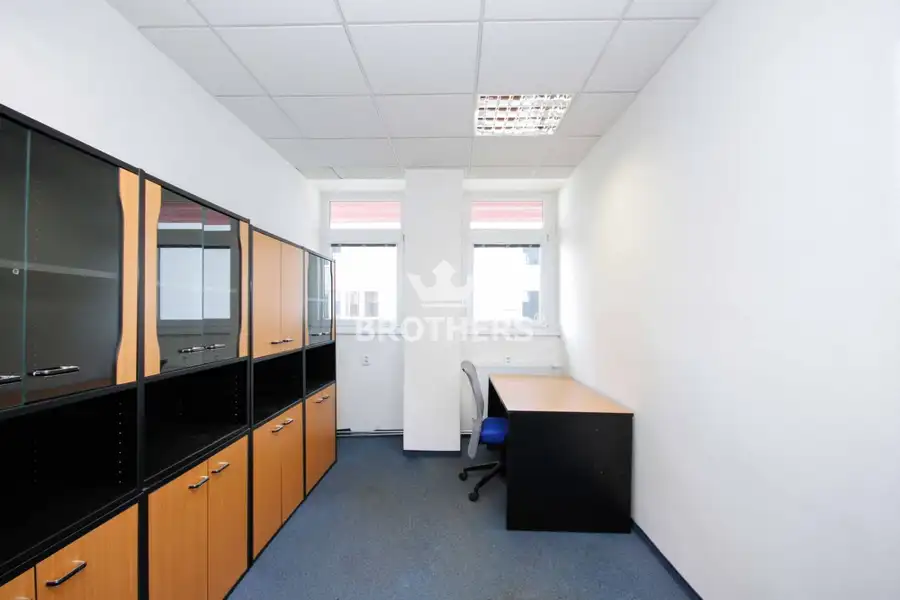

Prenájom - Kancelárske priestory vo vynikajúcej lokalite - 385,72m2 - Bratislava - Ružinov
Ružinov, Bratislava





- Plocha386 m²
- StavČiastočná rekonštrukcia
- VlastníctvoOsobné
O nehnuteľnosti
Realitná kancelária BROTHERS Vám ponúka na prenájom zariadené kancelárske priestory vo vynikajúcej lokalite na Priemyselnej ulici v Bratislave – Ružinov. Kancelárske priestory sa nachádzajú na 6. poschodí o výmere 385,72m2.DISPOZÍCIA:- chodba, 15x kancelária, priestranná terasa po celom obvode poschodia, toalety, kuchynkaVÝHODY:- výborná lokalita v širšom centre mesta- klimatizované priestory- kompletná občianska vybavenosť- možnosť parkovania v objekte budovy- voľné ihneď PARKOVANIE: - priamo v objekte budovy CENA: 3.860 ,- € mesačne + energieKONTAKT:Ohľadne obhliadky kontaktujte makléra:Mgr. Marcel Ulehla+421907284967, marcel.ulehla@brothersreal.comVyužite možnosť financovania cez HÚ, ktorý Vám radi pomôžeme vybaviť. K dispozícii je Vám náš hypotekárny špecialista, ktorý preverí Vaše hypotekárne možnosti a nájde to najlepšie riešenie pre Vás, čím ušetríte veľa času návštevou rôznych bankových inštitúcií.© COPYRIGHT BROTHERS Real, s.r.o. – Fotografie, obrázky a texty sú autorským dielom a majetkomrealitnej kancelárie BROTHERS Real, s.r.o.PREZENTOVANÉ INFORMÁCIE BOLI NADOBUDNUTÉ V DOBREJ VIERE OD VLASTNÍKA NEHNUTEĽNOSTI A REALITNÁ KANCELÁRIA BROTHERS ICH SPROSTREDKÚVA AKOINFORMATÍVNE ÚDAJE, ZA ICH SPRÁVNOSŤ A ÚPLNOSŤ NENESIE ZODPOVEDNOSŤ.
Parametre
- Druh
- Kancelárie, administratívne priestory
- Dátum zverejnenia
- 05. 04. 2023
- Stav nehnuteľnosti
- Čiastočná rekonštrukcia
- Typ
- Prenájom
- Vlastníctvo
- Osobné
- Úžitková plocha
- 386 m²